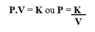
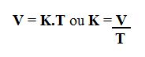
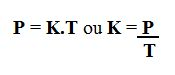
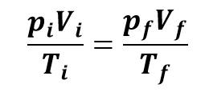
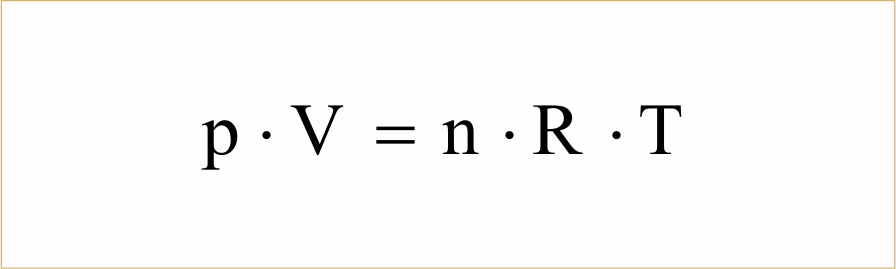

Gás Perfeito
A teoria cinética dos gases, também conhecida como teoria dos gases ideias, é um modelo que é utilizado para descrever e explicar o comportamento dos gases, esse modelo foi criado porque não é possível verificar o comportamento das partículas de gás. Um gás ideal (gás perfeito) é entendido por um conjunto de moléculas ( ou átomos ) que se movimentam de forma constate e também aleatória.
Gases
As variáveis de estado dos gases são: pressão, volume e temperatura.
Gasosos
As variáveis de estado dos gases são: pressão, volume e temperatura.
Gay-Lussac,Charles,Boyle
Equação da lei da BOYLE

Lei de Gay-Lussac

A Lei de Charles: isometria

Geral dos Gases e CLAPEYRON:
Equação Geral

Lei de CLAPEYRON

Energia cinética média
Energia cinética de uma partícula: Ec = ½ .m.v2
Energia cinética média: k.T
(k= constante de proporcionalidade)
Transformação isocórica: Essa transformação ocorre quando o volume se mantém constante e a temperatura e a pressão se variam. “Lei de Charles ou Lei de Charles e Gay-Lussac: para uma massa fixa de gás, mantida à volume constante, a pressão exercida pelo gás é diretamente proporcional à temperatura absoluta.” Isso significa que se aumentarmos a temperatura, a pressão que está dentro do recipiente que contém o gás irá aumentar e vice-versa. Isso acontece, pois, a pressão é o resultado das colisões das partículas do gás com as paredes do recipiente, com isso, quanto mais colisões, maior será a pressão.
Transformação isotérmica:
Essa transformação acontece quando um gás, em boas condições, sofre uma variação na sua pressão
e no seu volume, porém, sua temperatura permanece constante.
“Com a temperatura sendo mantida constante, a massa de determinado gás ocupa um volume
inversamente proporcional à sua pressão.”
Essa frase indica que se aumentarmos a pressão sobre o gás, o volume será diminuído e
vice-versa.
Duas grandezas são inversamente proporcionais quando o produto que está entre elas, origina uma
constante. Assim temos a formula:
P.V=k
Pressão.Volume
Transformação isobárica:
Essa é uma transformação gasosa que ocorre com a pressão constante, enquanto a temperatura e
volume variam.
“Com a pressão sendo mantida constante, a massa de determinado gás ocupa um volume diretamente
proporcional à sua temperatura termodinâmica.”
Isso significa que, quando aumentamos a temperatura d sistema, o volume que está ocupando a o
gás também irá aumentar, isto é, ele vai se expandir. Porém se ocorrer uma diminuição de
temperatura, o gás vai se contrair.
Desodorante
o GLP (gás liquefeito de petróleo) é o gás mais usado pelos desodorantes hoje em dia, sendo um gás inócuo, que não causa nenhum problema ao meio ambiente. Totalmente diferente do gás antigamente utilizado que era o CFC(clorofluorcarbono) que causava problemas na camada de ozônio.